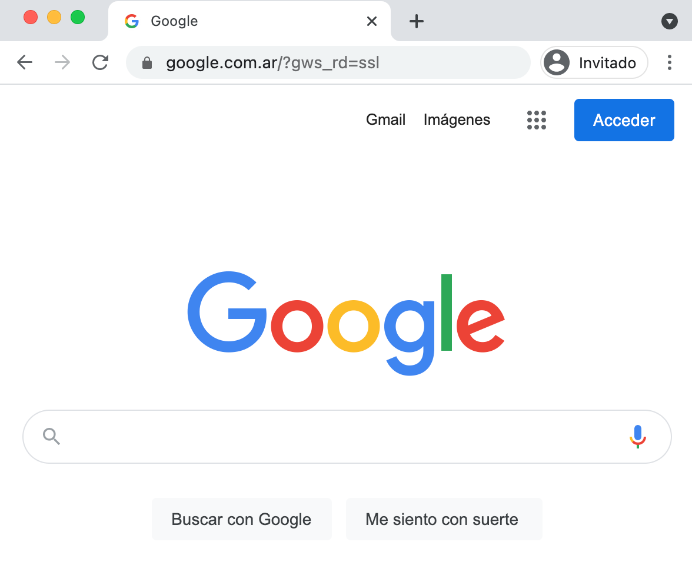

Google Chrome es un navegador web de código cerrado desarrollado por Google, aunque derivado de proyectos de código abierto (como el motor de renderizado Blink).Está disponible gratuitamente. El nombre del navegador deriva del término en inglés usado para el marco de la interfaz gráfica de usuario («chrome»).
Cuenta con más de 900 millones de usuarios, y dependiendo de la fuente de medición global, se considera el navegador más usado de la Web, logrando la popularidad mundial en la primera posición.
